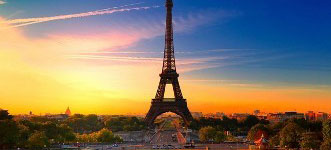

巴黎

卢浮宫（Louvre）
该举世闻名的艺术宫殿始建于12世纪初，当时是用作防御目的，后来经过一系列的扩建和修缮逐渐成为一个金碧辉煌的王宫。从16世纪起，弗朗索瓦一世开始大规模的收藏各种艺术品，以后各代皇帝延续了这个传统，充实了卢浮宫的收藏。如今博物馆收藏的艺术品已达40万件，其中包括雕塑，绘画，美术工艺及古代东方，古代埃及和古希腊罗马等7个门类。1981年，法国政府将这座精美的建筑进行了大规模的整修，从此卢浮宫成了专业博物馆。值得一提的是卢浮宫正门入口处有一个透明金字塔建筑，它的设计者就是著名的美籍华人建筑师贝聿铭。
埃菲尔铁塔（LatourEiffel）
建于1889年是为当时的国际博览会而建的，建好后遭到很多非议，说是一堆烂铁破坏了巴黎的美。如今，这座曾经保持世界最高建筑纪录四十多年的铁塔成为巴黎最重要的标志。浪漫的巴黎人给铁塔取了一个美丽的名字--"云中牧女"。埃菲尔铁塔是为隆重纪念法国1789年资产阶级革命100周年在轰动世界的国际博览会举行之际而建的。以设计人法国著名建筑工程师古斯塔夫·埃菲尔的名字命名，并在塔下为埃菲尔塑了一座半身铜像。全塔高320米，塔楼分三层，一、二楼有餐厅、咖啡座等，三楼是眺望台，在天晴的日子，可从此远眺70千米以外的巴黎近郊地区。
- 巴黎圣母院（NotreDamedeParis）
- 巴黎圣母院建成于1345年。不仅因雨果的同名小说而出名，更因为它是巴黎最古老、最宏伟的天主教堂。《巴黎圣母院》中将其称作“石头交响乐”。这座哥特式的巨石建筑物已经有两百年历史，是巴黎最古老、最大、建筑最出色的天主教堂，在欧洲建筑史上也具有划时代的意义。
凯旋门（ArcdeTriomphe）
爱德华凯旋门位于戴高乐广场中央，高达50米，是巴黎的象征之一。以凯旋门为中心，向外延伸着12条主要大街。它建成于1836年，是为纪念法国军队的光荣和胜利而建造的，其规模超过了罗马的君士坦丁凯旋门。
2018年10月，第十七届“全球城市竞争力排行榜”发布，巴黎排名第四。